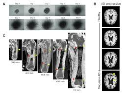

Publication Highlights
PedVision: A Manual-Annotation-Free and Age Scalable Segmentation Pipeline for Bone Analysis in Hand X-Ray Images
Our latest open-access paper presents a segmentation pipeline for bone analysis in hand X-ray images.
A GitHub link to the open model is available below.
A GitHub link to the open model is available below.

Shape modeling of longitudinal medical images: from diffeomorphic metric mapping to deep learning
A recent review article covering current methodologies, emerging approaches, and future directions for modeling complex, nonlinear shape changes in biological tissues over time.
Towards growth-accommodating deep learning-based semantic segmentation of pediatric hand phalanges
A deep learning approach for semantic segmentation of pediatric hand phalanges, accommodating growth and anatomical variation.
Biomechanical evaluation of additively manufactured patient-specific mandibular cage implants designed with a semi-automated workflow: A cadaveric and retrospective case study
A study on the biomechanical evaluation of patient-specific mandibular cage implants, combining digital workflow and experimental validation.